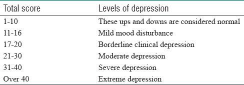

This website follows Beck Depression Inventory (BDI-II)
Check your Depression level

The Beck Depression Inventory (BDI) is a 21-item, self-report rating inventory that measures characteristic attitudes and symptoms of depression). Individual questions of the BDI assess mood, pessimism, sense of failure, self-dissatisfaction, guilt, punishment, self-dislike, self-accusation, suicidal ideas, crying, irritability, social withdrawal, body image, work difficulties, insomnia , fatigue , appetite, weight loss, bodily preoccupation, and loss of libido.
INSTRUCTIONS:
This questionnaire consists of 21 points, each point contains of a number of statements. Please read the following carefully and select the one that best describes your health during the past two weeks, including today.
Q1. Saddness
I do not feel sad
I feel sad
I am sad all the time and I can't snap out of it
I am so sad and unhappy that I can't stand it
Q2. Pessimism
I am not particularly discouraged about the future
I feel discouraged about the future
I feel I have nothing to look forward to
I feel the future is hopeless and that things cannot improve
Q3. Sense of failure
I do not feel like a failure
I feel I have failed more than the average person
As I look back on my life, all I can see is a lot of failures
I feel I am a complete failure as a person
Q4. Loss of pleasure
I get as much satisfaction out of things as I used to
I don't enjoy things the way I used to
I don't get real satisfaction out of anything anymore
I am dissatisfied or bored with everything
Q5. Guilt
I don't feel particularly guilty
I feel guilty a good part of the time
I feel quite guilty most of the time
I feel guilty all of the time
Q6. Sense of punishment
I don't feel I am being punished
I feel I may be punished
I expect to be punished
I feel I am being punished
Q7. Loathing
I don't feel disappointed in myself
I am disappointed in myself
I am disgusted with myself
I hate myself
Q8. Self-incrimination
I don't feel I am any worse than anybody else
I am critical of myself for my weaknesses or mistakes
I blame myself all the time for my faults
I blame myself for everything bad that happens
Q9. Suicidal ideas
I don't have any thoughts of killing myself
I have thoughts of killing myself, but I would not carry them out
I would like to kill myself
I would kill myself if I had the chance
Q10. Crying
I don't cry any more than usual
I cry more now than I used to
I cry all the time now
I used to be able to cry, but now I can't cry even though I want to
Q11. Irritability
I am no more irritated by things than I ever was
I am slightly more irritated now than usual
I am quite annoyed or irritated a good deal of the time
I feel irritated all the time
Q12. Social withdrawal
I have not lost interest in other people
I am less interested in other people than I used to be
I have lost most of my interest in other people
I have lost all of my interest in other people
Q13. Indecision
I make decisions about as well as I ever could
I put off making decisions more than I used to
I have greater difficulty in making decisions more than I used to
I can't make decisions at all anymore
Q14. Feelings of wothlessness
I don't feel that I look any worse than I used to
I am worried that I am looking old or unattractive
I feel there are permanent changes in my appearance that make me look unattractive
I believe that I look ugly
Q15. Difficulty of concentration
I can work about as well as before
It takes an extra effort to get started at doing something
I have to push myself very hard to do anything
I can't do any work at all
Q16. Change of sleep
I can sleep as well as usual
I don't sleep as well as I used to
I wake up 1-2 hours earlier than usual and find it hard to get back to sleep
I wake up several hours earlier than I used to and cannot get back to sleep
Q17. Fatigue
I don't get more tired than usual
I get tired more easily than I used to
I get tired from doing almost anything
I am too tired to do anything
Q18. Changes in appetite
My appetite is no worse than usual
My appetite is not as good as it used to be
My appetite is much worse now
I have no appetite at all anymore
Q19. Weight changes
I haven't lost much weight, if any, lately
I have lost more than five pounds
I have lost more than ten pounds
I have lost more than fifteen pounds
Q20. Health
I am no more worried about my health than usual
I am worried about physical problems like aches, pains, upset stomach, or constipation
I am very worried about physical problems and it's hard to think of much else
I am so worried about my physical problems that I cannot think of anything else
Q21. Loss of interest in sex
I have not noticed any recent change in my interest in sex
I am less interested in sex than I used to be
I have almost no interest in sex
I have lost interest in sex completely Speak to your self